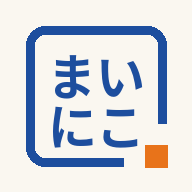

記録に表示される、あなたのお名前(下の名前)を入力してください。
はじめて使う場合は「新しくはじめる」を。すでにご家族が使っている場合は、招待コードを入力してください。
参加の申請を送りました。ご本人または管理のご家族が「参加を認める」を押すと、利用をはじめられます。承認されるまで、記録は表示されません。
この画面はそのままで大丈夫です。承認されると自動で切り替わります。
一度使った招待コードは、もう一度は使えません。申請を取り下げたときや認められなかったときは、新しい招待コードを発行してもらってください。
まちがえて押した記録を、とりけすことができます。とりけせるのは、この端末で今日つけた記録だけです。
QRの作成・表示・停止はここで管理します。QRには氏名・住所・電話番号・病歴・位置情報を入れません。